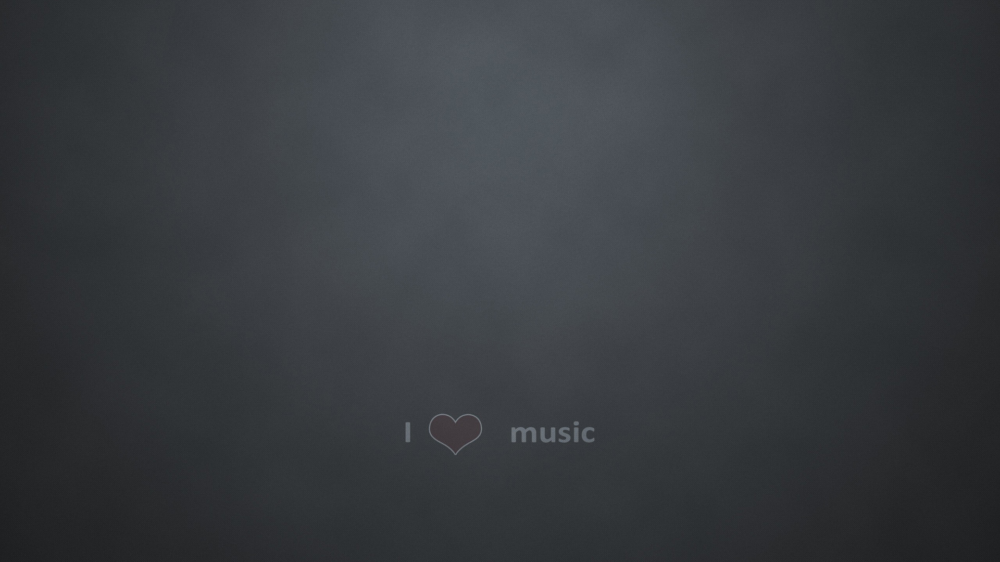
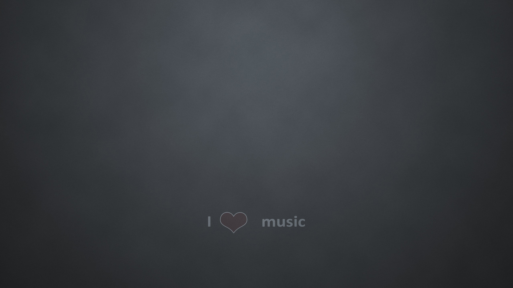

Learn to enjoy every minute of your life. Be happy now.
Don't wait for something outside of yourself to make you happy in the future.
Think how really precious is the time you have to spend, whether it's at work or with your family.
Every minute should be enjoyed and savored.
 
